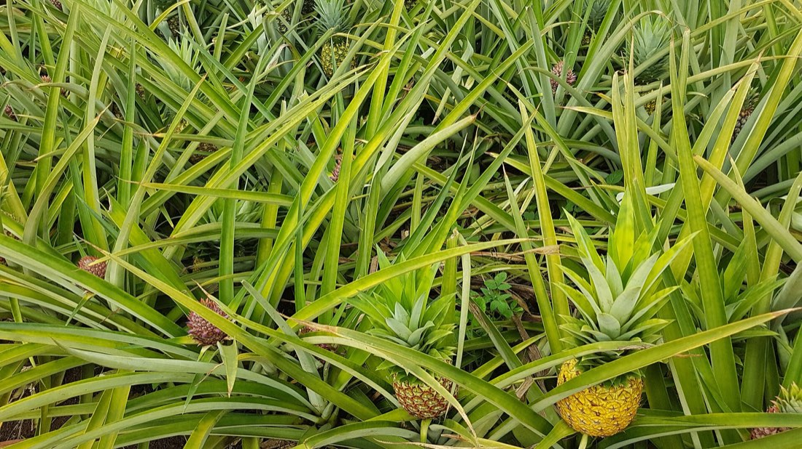
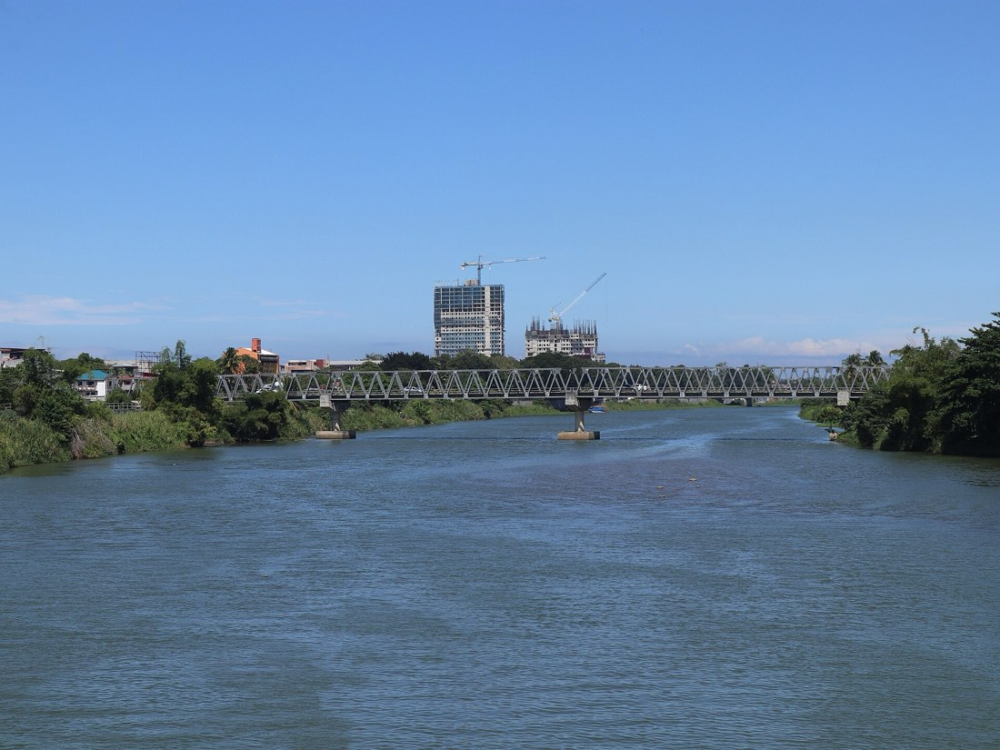
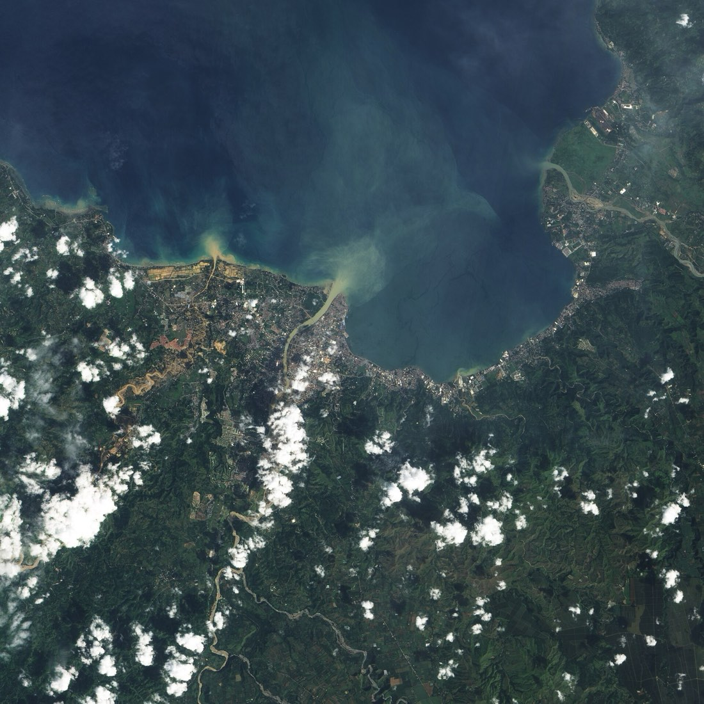

Make a storm
Set how much rain falls in one day, how wet the soil already is, and what covers the ground. The two tubes share one scale: the rain that fell, and the runoff that left.
Schematic drawing, not to scale. The tubes and the bar show the model's numbers; the river and the plume only echo them.
Same rain, different ground
Each bar is the whole day’s rain. The brown part ran off. The top four show the basin as a single cover; the last bar is your own mix.
How the number is made
This is the curve-number method, a standard hydrology tool for turning one day of rain into one day of runoff. It has five steps, and the slip beside this text works them out for the storm you have set.
- Each land cover gets a curve number, CN. The higher it is, the less rain the ground can take. These are the standard table values for ground in good condition on medium-draining soil.
- Soil wetness shifts the curve number: soaked ground acts like a higher number, dry ground like a lower one.
- The ground's holding capacity is S = 25,400 ÷ CN − 254, in millimetres. The first fifth of it is lost before any runoff starts.
- Runoff for the day is Q = (P − 0.2 S)² ÷ (P + 0.8 S), where P is the rain. If P is no more than 0.2 S, nothing runs off.
- Average the four runoffs, weighted by how much of the basin each cover takes up.
Your storm
Basin runoff, weighted0 mm
From the ridge to the bay
The plate above draws the slope in four bands. These are the kinds of ground it stands for.



What this leaves out
It answers one question well enough to see the shape of the answer. It cannot tell you whether a river will flood.
- One day, one total. There is no clock. It gives the depth of runoff, not when the flood peak arrives or how high the river rises.
- Even rain. The same rain falls on every corner of the basin. Real storms are patchy: on the night of Washi, upland gauges reported more than the city gauge.
- Borrowed numbers. The curve numbers come from standard tables written for small catchments, and the soil is assumed to be one medium-draining type. Nobody has calibrated them to this basin here.
- Invented mix. The starting land-cover shares are illustrative. They are not measured from this basin.
- No channels, slopes or river banks. Bamboo planted along the river, levees and floodways are not in the model.
For warnings and forecasts, use PAGASA bulletins and your local disaster risk reduction office. This page is a study aid.